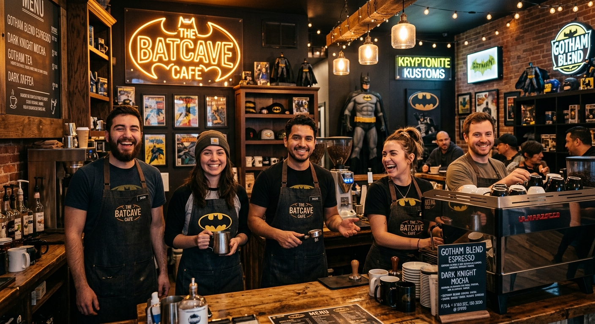

Sobre nosotros
Una familia detras de cada taza
En The Batcave cafe creemos que un gran cafe no solo se logra con los mejores granos sino con las personas que lo preparan con dedicacion cada dia. Mas que un grupo de trabajo somos una verdadera familia apasionada por el servicio y la cultura pop.

Nuestra Filosofía
Cultura de trabajo y calidez
Cada integrante de nuestro equipo aporta su toque unico para crear una atmosfera calida y cercana. Queremos que cada cliente se sienta recibido como en su propia casa desde el momento en que cruza la puerta